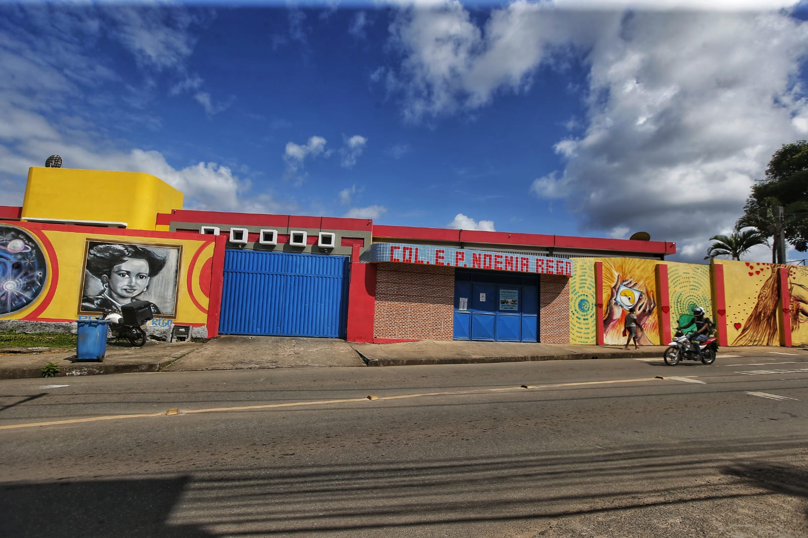
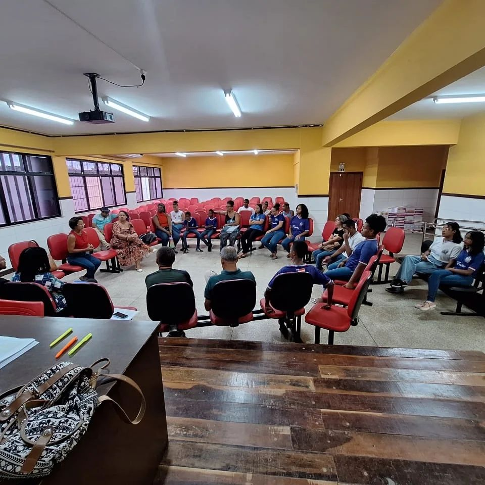
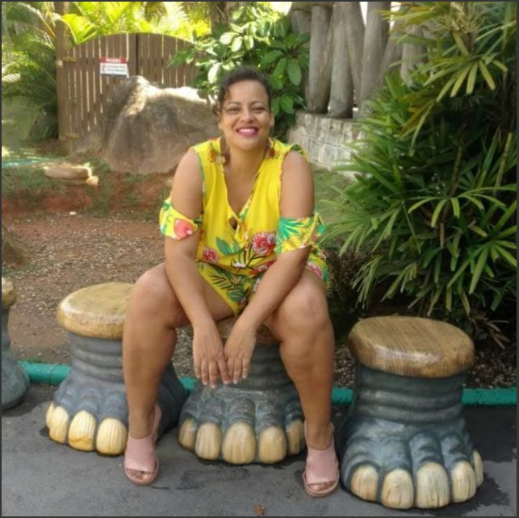
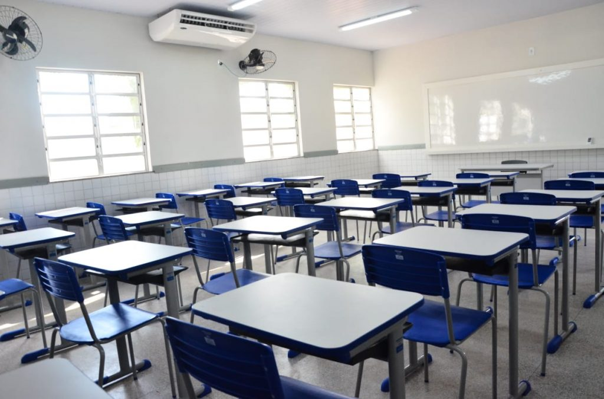
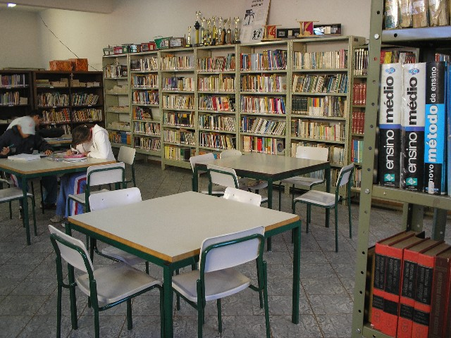
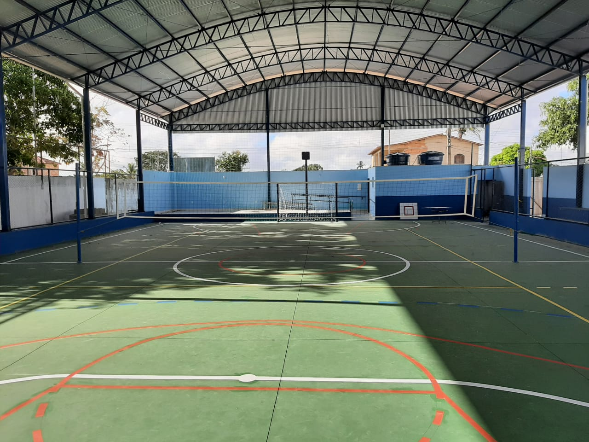
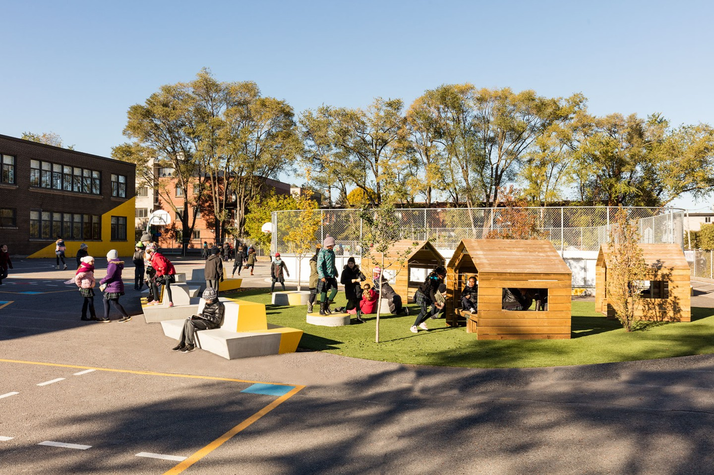

Sobre o Colégio Professor Noêmia Rêgo

"A data de fundação do colégio ainda está em pesquisa, mas acredita-se que tenha sido na década de 1970. Inicialmente, era uma escola de ensino fundamental, atendendo a comunidade do bairro de Valéria."
Quem Somos

"Filosofia Educacional do Colégio Noêmia Rego
Visão: Ser referência em educação de qualidade e equidade, formando cidadãos críticos, autônomos e
transformadores da sociedade.
Missão: Promover a educação integral e humanizada, valorizando o desenvolvimento individual e coletivo
dos alunos.
Valores: Ética, responsabilidade, solidariedade, autonomia e criatividade.
Metodologias: Abordagem sociointeracionista, aprendizagem significativa, metodologias ativas e uso de
tecnologias digitais.
Foco Pedagógico: Formação integral, educação para a cidadania, preparo para o mercado de trabalho e
valorização da cultura e da diversidade."
Equipe Pedagógica
-
Edson
Diretor
-

Vanessa
Vice-Diretora
Proposta Pedagógica
Ser referência em educação de qualidade e equidade, reconhecida pela excelência de seu ensino e pela formação de cidadãos conscientes e atuantes.
Infraestrutura
-

Salas de Aula Modernas
Equipadas com recursos audiovisuais e internet.
-

Biblioteca Completa
Acervo atualizado e diversificado.
-

Quadras
Diversas quadras para esportes!
-

Pátio escolar
Pátio sempre pensando e feito com carinho para agradar a todos!